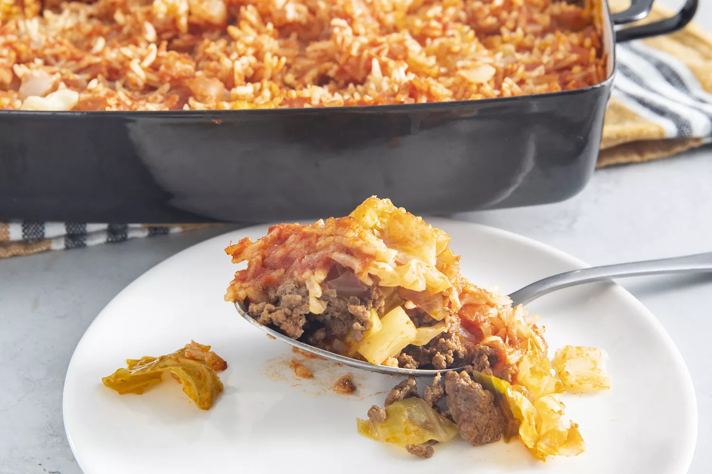

Cabbage Roll Casserole

Cabbage Roll Casserole
Tender chopped cabbage with rich, meaty flavor is just a few steps away. You'll find the full recipe below with step-by-step instructions, but here is a list of ingredients to prepare
Ingredients
- 1kg of ground beef
- 2kg of chopped cabbage
- 1 can tomato sauce
- 1 cup of chopped onion
- 1 cup of uncooked white rice
- 1 teaspoon salt
- 2 cans beef broth
Steps
- Preheat the oven to 170 degrees C (350 degrees F)
- Heat a large skillet over medium-high heat. Cook and stir ground beef in the hot skillet until browned and crumbly, 5 to 7 minutes. Drain and discard grease.
- Combine cabbage, tomato sauce, onion, rice, and salt in a large mixing bowl. Stir in cooked ground beef. Pour mixture into a 9x13-inch baking dish, then pour beef broth over top.
- Cover and bake in the preheated oven for 1 hour. Stir, re-cover, and bake until cabbage is tender and rice is done, 20 to 30 minutes more.